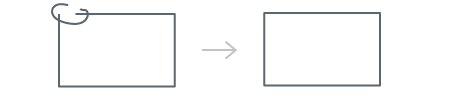

Overview
Geometry Widget is an interactive shape input method, enabling users to draw 2D geometric constructions freehand, with a finger or a stylus. It is designed to ensure a natural, handwriting-based HMI with real-time recognition.
Geometric properties, also called constraints in this documentation, can be modified by the user thanks to editing gestures and value input.
Use cases
See below a few integration examples.
Education
In this scenario, the user handwrites a shape, labels its vertices, modifies it using constraints such as segment length, angle width, parallelism and perpendicularity. The shape is automatically beautified and updated with these constraints.

Interior decoration
In this scenario, the user designs furniture by combining handwritten shapes that are then beautified and by setting their size using constraints.
Features
Geometry input
Canvas where the user can draw geometrical figures freehand.
Real-time shape recognition and beautification
Real-time recognition and beautification of shapes taking into account remarkable angles, alignment attraction (vertical/horizontal/parallel/perpendicular), congruence and connection attraction.
Constraint detection
Real-time detection of identical angles and/or segment values, horizontality, verticality, perpendicularity, parallelism, junction/connection, congruence.
Editing gestures
Gestures for perpendicularity, parallelism, junction/connection, equality of angles and/or lengths, circumference can be applied onto the recognized shapes. Undo/redo features are supported.
Segment length and angle value input
Segment lengths and angle values can be edited. Segments/angles are automatically updated and properly rendered.
Serialization
Resulting geometrical figures can be saved to be reloaded for later editing. They can also be exported as images.
Supported shapes
| User action | Gesture |
|---|---|
| Circle | |
| Circular arc | |
| Ellipse | |
| Elliptical arc | |
| Parallelogram | |
| Point (cross in one stroke) | |
| Point (small and empty circle) | |
| Point (scribble) | |
| Polygon | |
| Polyline | |
| Quadrilateral | |
| Rectangle | |
| Rhombus | |
| Segment | |
| Square | |
| Trapezoid | |
| Triangle |
Supported gestures
| User action | Gesture | Description | Code sample |
|---|---|---|---|
| Single tap | Briefly touch an item | Select the item | |
| Scratch-out | Scratch out an item | Erase |
Supported constraints
A defined set of geometric constraints is supported by the Geometry Widget. There are two types of constraints:
- implicit: The constraint is automatically detected when a shape is created.
- explicit:The user draws a gesture to set a constraint.
Explicit constraints are stronger than implicit constraints. By combining the shape creation and geometric constraints, the user can create a complex geometric construction.
Implicit and explicit constraints can be shown on the figure with specific symbols and are displayed with a different color:
- blue for implicit right angle,
- one from a set of 10 colors for explicit constraints (by pair for same length/angle).
The following table shows which constraints are supported and the various ways to define them:
| Constraint | Implicit creation | Explicit creation |
|---|---|---|
| Angle value | n/a | Input the angle value. |
| Concentricity | Two circles whose centers are close. | Circle two circles’ centers. |
| Connection | An extremity or point connected to another shape or point. | Small circle on the two shapes or segments to be joined. You can also circle a segment crossing a circle to indicate it is the diameter. |
| Equality of angles | Any shape that has two or more equal angles. Remarkable line: bisector. | Angle mark gesture on two segments (one time on two different angles), to indicate that they are equal. |
| Equality of lengths | Any shape that has two or more equal segments. | Short line gesture on a segment or circle (one time on two different shapes), to indicate that their lengths are equal. |
| Horizontal | An almost horizontal segment. | n/a |
| Junction  | Extremities of shapes or segments that have been drawn very close. Note that points are regarded as extremities here. | Small circle/ellipse on the two shapes or segments to be joined. You can also circle: a) a point inside a circle to indicate it is the center, b) a segment inside a circle to indicate it is a radius. |
| Length value | n/a | Input the segment length. |
| Parallelism | Any shape that has two or more parallel segments. | One chevron on two different segments, to indicate that they are parallel. |
| Perpendicularity | Any shape that has at least one right angle. Remarkable lines: altitude and perpendicular bisector. | Right angle gesture (chevron) in one stroke. |
| Radius equality | Two circles with two similar diameters. | See Equality of lengths. |
| Vertical | An almost vertical segment. | n/a |
Recommendations
Small strokes rejection
This value is set to avoid small strokes. It means that strokes smaller than the defined value will be recognized as dots.
If you increase the value, you will detect more dots. If you decrease it, you will detect smaller strokes, but dot input will be harder.
Ellipse and circle recognition
This value is set to ease the drawing of large circles, but can be updated according to your needs. The higher the value, the more likely the widget will recognize circles rather than ellipses. The lower the value, the more the widget will give accurate recognition of all kinds of ellipses and circles.
Detection and display for implicit and explicit constraints
Both implicit and explicit constraints’ detection and display features can be enabled or disabled. The default values are set to:
- ease the recognition of geometric properties and help the user to draw right angles, parallels, same-length segments, freehand or by using explicit gestures.
- help the user to learn gestures.
- avoid a visual overload of the canvas with explicit constraints.
Implicit constraints are mainly a drawing assistance. They are automatically detected by the widget and quickly fade out. We recommend making implicit constraints fade out because they can be confused with explicit constraints. They do have the same graphic design but not the same behavior. We also suggest you add a button to let the user display implicit constraints on demand.
Explicit constraints are to be manually set and have priority over implicit constraints. New explicit constraints have priority over previous constraints.
You can also choose to disable the implicit constraints’ detection and display features.
In the below figures, you can see examples of detection and display feature for implicit constraints.

Point size
The point size value is set to be visible:
- on lines crossing.
- on large lines (up to 3pt).
- on explicit constraints.

Adjacent angle marker
This value is set to offer a graphic rendering that is visible with adjacent angles and clearly differentiated from the drawing.
Equality of lengths
This value is set to offer a graphic rendering that is visible over lines and clearly differentiated from the drawing.
Set of colors
The defined set of colors is set to:
- be differentiated from each other,

- be distinguished by color-blind people (deuteranopia, protanopia, tritanopia).
Stroke display
The stroke display value is set to:
- keep a clean and precise drawing with light thickness,
- be distinguishable from implicit and explicit constraints, as it is defined in a different neutral color.
Integration
Step 1 - Download your Certificate
- Download the certificate from the Support website.
- Paste it in your project and start creating your app.
Step 2 - Configure your Dependencies
- In the
build.gradlefile of your project, add:
repositories {
flatDir {
// Location of your package's `libs` directory containing `*.aar` files.
dirs 'path/to/libs'
}
}- In the
dependenciessection, add:
compile 'com.android.support:appcompat-v7:23.+'
compile(name: 'MyScript_ATK-Core-android-component', ext: 'aar')
compile(name: 'MyScript_ATK-Geometry-android-component', ext: 'aar')
compile(name: 'MyScript_ATK-GeometryWidget-android-widget', ext: 'aar')Step 3 - Add Resources
Copy the assets directory from samples/GeometryWidgetSample/src/main into your project. It contains the following directories:
-
shape: contains ashape.conffile with the different resources and configurations to be activated, -
resources/shape: contains resources, -
css: contains style information.
Step 4 - Add a Layout Resource
To integrate the Geometry Widget view, add the following snippet in your layout.
<com.myscript.atk.geometry.widget.GeometryWidget
android:id="@+id/geometry_widget"
android:layout_width="fill_parent"
android:layout_height="fill_parent"
/>Step 5 - Start with Minimal Integration Code
Edit the MainActivity class:
public class MainActivity extends AppCompatActivity implements
GeometryWidgetApi.OnConfigureListener,
GeometryWidgetApi.OnRecognitionListener
{
private static final String TAG = "GeometryDemo";
private GeometryWidgetApi widget;
@Override
protected void onCreate(Bundle savedInstanceState)
{
super.onCreate(savedInstanceState);
setContentView(R.layout.activity_main);
widget = (GeometryWidgetApi) findViewById(R.id.geometry_widget);
if (!widget.registerCertificate(MyCertificate.getBytes()))
{
AlertDialog.Builder dlgAlert = new AlertDialog.Builder(this);
dlgAlert.setMessage("Please use a valid certificate.");
dlgAlert.setTitle("Invalid certificate");
dlgAlert.setCancelable(false);
dlgAlert.setPositiveButton("OK", new DialogInterface.OnClickListener()
{
public void onClick(DialogInterface dialog, int which)
{
//dismiss the dialog
}
});
dlgAlert.create().show();
return;
}
// Listen to widget events (see onConfigurationBegin and onRecognitionEnd APIs)
widget.setOnConfigureListener(this);
widget.setOnRecognitionListener(this);
// references assets directly from the APK to avoid extraction in application
// file system
widget.addSearchDir("zip://" + getPackageCodePath() + "!/assets/conf");
// The configuration is an asynchronous operation. Callbacks are provided to
// monitor the beginning and end of the configuration process and update the UI
// of the input method accordingly.
//
// "shape" references the shape bundle name in conf/shape.conf file in your assets.
// "standard" references the configuration name in shape.conf
widget.configure("shape", "standard");
}
@Override
protected void onDestroy()
{
widget.setOnRecognitionListener(null);
widget.setOnConfigureListener(null);
// release widget's resources
widget.release();
super.onDestroy();
}
@Override
public void onConfigurationBegin(GeometryWidgetApi widget)
{
}
@Override
public void onConfigurationEnd(GeometryWidgetApi widget, boolean success)
{
if(!success)
{
Toast.makeText(getApplicationContext(), widget.getErrorString(), Toast.LENGTH_LONG).show();
Log.e(TAG, "Unable to configure the Geometry Widget: " + widget.getErrorString());
return;
}
Toast.makeText(getApplicationContext(), "Geometry Widget Configured", Toast.LENGTH_SHORT).show();
if(BuildConfig.DEBUG)
Log.d(TAG, "Geometry Widget configured!");
}
@Override
public void onRecognitionBegin(GeometryWidgetApi widget)
{
}
@Override
public void onRecognitionEnd(GeometryWidgetApi widget)
{
Toast.makeText(getApplicationContext(), "Recognition update", Toast.LENGTH_SHORT).show();
if(BuildConfig.DEBUG)
{
Log.d(TAG, "Geometry Widget recognition");
}
}
}API
See the API documentation for Android.